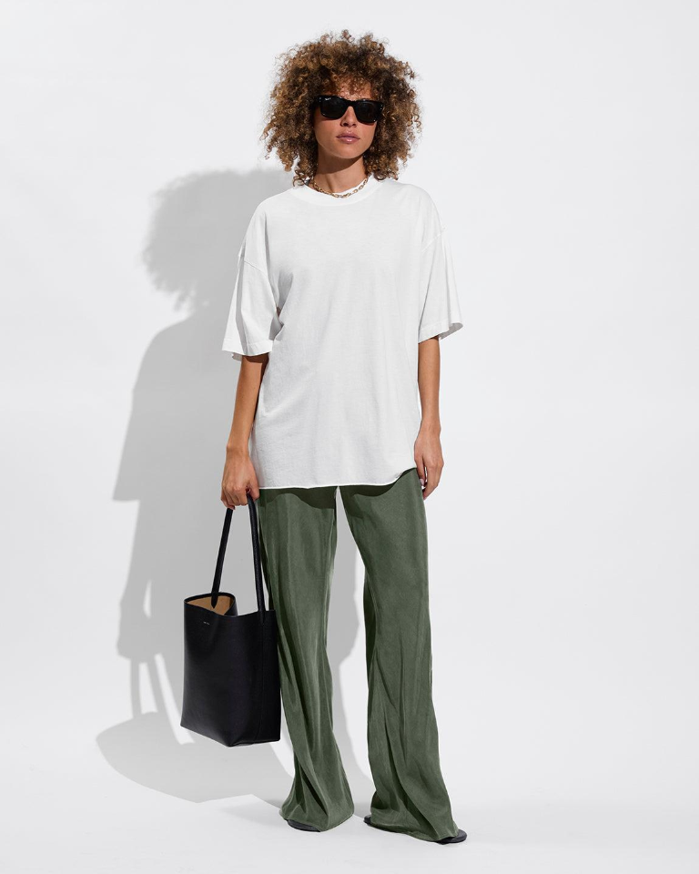

Welcome to Elsewhere
Less ordinary.
More you.
Everyday pieces, with room for your own point of view. Get dressed like yourself.
Explore the designs
Explore our visual identity
Two ways to see simplicity.
A white T-shirt is more than a basic. It is a wardrobe staple that can be styled in countless ways. Explore two different design directions that show how simplicity can become a form of personal expression.
Modernism
Find beauty in simplicity.
A clean and thoughtful approach to everyday fashion. Modernism focuses on structure, balance, and simplicity, allowing the white T-shirt to become the foundation of your personal style.
Postmodernism
Make the everyday unexpected.
A playful and expressive approach to personal style. Postmodernism challenges traditional expectations through creative details, unexpected combinations, and individuality.